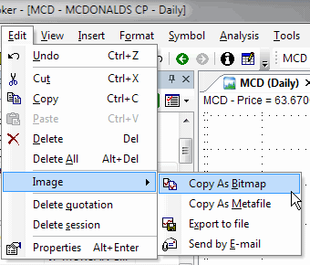

Undo
Allows you to undo the last operation performed on chart studies (trendlines etc.). This option will be unavailable if no study has been drawn or moved.
Cut, Copy, Paste, Delete
These options can be used to cut, copy, paste or delete studies from the chart. Cut, Copy, and Delete will be greyed out if no object on the chart is selected. To paste the object, it's necessary to use the 'Copy' or 'Cut' option first.
To learn more about drawing tools in AmiBroker, please read Drawing tools reference chapter.
Delete All
Deletes all objects from the currently open chart window.
Image
Delete Quotation
Deletes the currently selected bar.
Delete Session
Deletes the currently selected bar from all the symbols in the database.
Properties
Opens a study properties dialog. More information can be found in Drawing tools reference chapter.